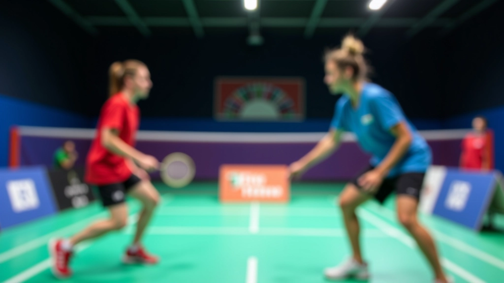
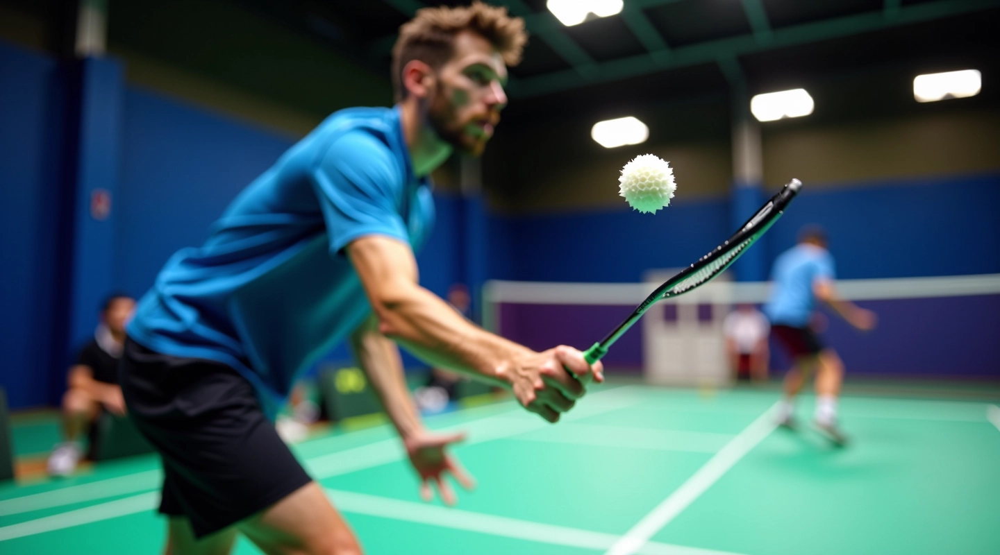
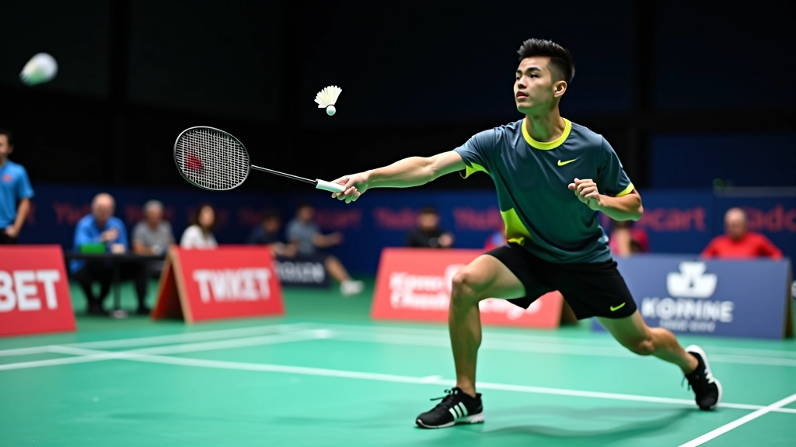
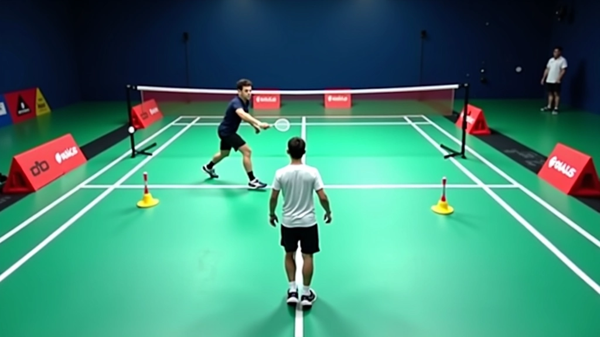

تحسين سرعة حركتك على الملعب
تقنيات فعّالة لزيادة سرعة الحركة الجانبية والأمامية. تمارين بسيطة تحتاج ممارسة منتظمة لترى النتائج.
اقرأ المقالإتقان التحكم بالريشة في الضربات الدقيقة يتطلب تركيزاً عالياً وممارسة مستمرة. تعلم الأساليب والتقنيات التي تحسن من دقتك وتجعلك لاعباً أفضل على الملعب.

التحكم بالريشة ليس مجرد مهارة عادية — إنه الفرق بين لاعب يعتمد على الحظ ولاعب يتحكم بالمباراة. عندما تتحكم بالريشة بدقة، تقلل أخطاءك وتزيد من فرصك في تسجيل النقاط. معظم اللاعبين يركزون على القوة والسرعة، لكنهم ينسون أن الدقة هي التي تفوز بالمباريات.
الضربات الدقيقة — سواء كانت إسقاط أمامي أو ضربة جانبية ضيقة — تحتاج إلى سيطرة كاملة على الريشة من لحظة ملامستها للمضرب. نحن هنا لنساعدك على تطوير هذه السيطرة من خلال تمارين عملية وسهلة التطبيق.
كل شيء يبدأ بالأساسيات. إذا لم تكن الحركات الأساسية صحيحة، فلن تتمكن من التحكم بالريشة بدقة مهما حاولت. أولاً، تأكد من أن إمساكك بالمضرب صحيح — ليس قبضة قوية جداً وليس ضعيفة. يجب أن تشعر بتوازن طبيعي.
ثانياً، موضع قدميك أهم من تحركك السريع. قف بثبات مع قدميك متباعدتين بعرض الكتفين تقريباً. هذا يعطيك استقراراً عند ضرب الريشة. ثالثاً، استخدم معصمك بذكاء — المعصم هو الذي يتحكم بدقة الضربة وليس الذراع بأكملها.
هذه الضربة تحتاج إلى تحكم عالي جداً. تهدف إلى إسقاط الريشة بالقرب من الشبكة بحيث لا يستطيع الخصم الوصول إليها بسهولة. تحتاج إلى ضربة هادئة بمعصم ثابت وليس بقوة الذراع.
أرسل الريشة إلى الزاوية الضيقة من الملعب. هذه الضربة تتطلب دقة عالية لأن هامش الخطأ صغير جداً. مارس هذه الضربة بثبات وركز على السيطرة وليس على السرعة.
عندما تأتيك الريشة بسرعة عالية، استخدم قوتها بدل مقاومتها. أرسلها للخلف بتحكم دقيق. هذه الضربة تحتاج إلى توقيت ممتاز وسيطرة على المعصم.


الممارسة المستمرة هي المفتاح الحقيقي. لا يمكنك تحسين التحكم بالريشة بدون تمارين منتظمة. جرب هذه التمارين 3-4 مرات أسبوعياً لمدة 30 دقيقة لكل جلسة. ستلاحظ تحسناً واضحاً خلال 6-8 أسابيع.
هذه النصائح ستساعدك على تسريع عملية التحسن والوصول إلى مستوى احترافي
لا تنظر للخصم أو الملعب — ركز نظرك على الريشة من لحظة ملامستها للمضرب. هذا يحسن دقتك بشكل كبير.
معصمك هو مفتاح التحكم. مارس تمارين معصم منفصلة لتقويتها. ستشعر بالفرق خلال أسابيع.
لا تبدأ التدريب مباشرة. أحمِ معصمك وذراعك وكتفك لمدة 5-10 دقائق. هذا يمنع الإصابات ويحسن الأداء.
صور نفسك وأنت تلعب. شاهد الفيديو لاحقاً واكتشف الأخطاء. هذا يسرع عملية التعلم كثيراً.
التحدي يدفعك للتحسن. ابحث عن شركاء تدريب أفضل منك — ستجبرك على الاهتمام أكثر بدقتك.
كل ضربة خاطئة فرصة للتعلم. اسأل نفسك: لماذا فشلت هذه الضربة؟ كيف أصحح نفسي؟

فريق التحرير والمحتوى
أعده فريق ريشة الأبطال التحريري، متخصصون في تقديم تمارين عملية وسهلة التطبيق لتحسين سرعة الريشة والتحكم بها.
هذا المقال يقدم معلومات تعليمية عامة عن تحسين التحكم بالريشة. النتائج تختلف من شخص لآخر حسب مستوى اللياقة والخبرة السابقة. إذا كنت تعاني من أي إصابة أو ألم، استشر طبيباً قبل البدء بالتمارين. الممارسة المنتظمة والصبر هما المفتاح الحقيقي للنجاح.
التحكم بالريشة في الضربات الدقيقة ليس موهبة، إنه مهارة يمكنك تطويرها. كل لاعب احترافي بدأ من الصفر. ما يميزهم ليس الموهبة وحدها — بل الممارسة المستمرة والالتزام بالتحسن. ابدأ اليوم، التزم بالتمارين، وستشعر بالفرق قريباً جداً.
تذكر: كل ضربة دقيقة تؤديها بشكل صحيح هي خطوة نحو أن تصبح لاعباً أفضل. لا تستعجل النتائج — استمتع بعملية التعلم والتطور. هذا هو السر الحقيقي للنجاح في الريشة.
اكتشف المزيد من التمارين